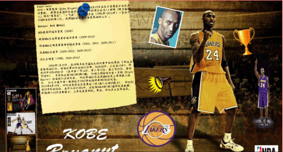
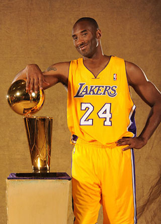
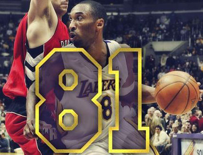
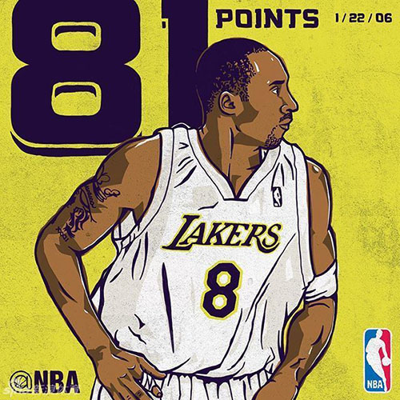

Experience
科比·布莱恩特（Kobe Bryant），1978年8月23日出生于美国宾夕法尼亚州费城，
前著名美国职业篮球运动员，司职得分后卫/小前锋（锋卫摇摆人),绰号"黑曼巴"、"小飞侠"，整个NBA生涯（1996年-2016年）一直效力于NBA洛杉矶湖人队，是前NBA球员乔·布莱恩特的儿子 。

Honour And Medal
NBA最有价值球员奖（2008）
两届NBA总决赛最有价值球员奖（2009-2010）
四届NBA全明星赛最有价值球员奖（2002；2007；2009;2011）
五届NBA总冠军（2000-2002；2009-2010）
18次全明星（1998；2000-2016）
The Top Of
His Profession
2006年1月22日，在对阵多伦多猛龙队的比赛中科比得到
了职业生涯新高的81分。该场比赛科比出战41分钟，46投28中，三分球13中7，罚球20中18狂砍81分
（其中第一节14分、第二节12分、第三节27分、第四节28分），另外他还有6板2助3断1帽。
打破之前由埃尔金·贝勒（Elgin Baylor）创造的71分的纪录，
科比单场81分还是NBA历史上单场第二高分，
仅次于威尔特·张伯伦于1962年创造的单场100分纪录。

2016年4月14日，科比迎来职业生涯最后一战(湖人主场VS爵士)，
科比50投22中狂砍60分，其中三分21投6中，还包括4板4助1抢1盖的完美数据，
率领湖人15分逆转爵士，上演完美告别战。赛后，科比正式宣布退役。